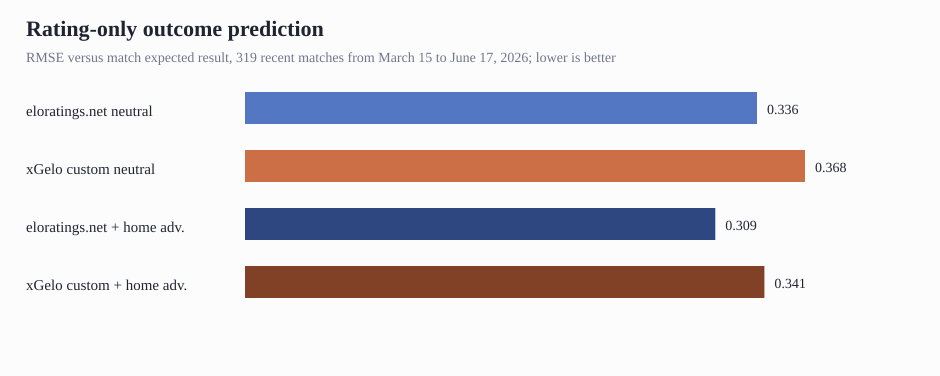

Should xGelo Replace Its Custom Elo?
Decision report for the next tournament or qualifier cycle
Executive Summary
- Do not swap the Elo input blindly, but prioritize an eloratings.net-style replacement benchmark. The recent smoke test favors eloratings.net on every rating-only outcome metric, with RMSE improving from 0.341 for current xGelo Elo to 0.309 for eloratings.net-style ratings with home advantage.
- The current custom Elo is structurally underpowered for this use case. xGelo uses match-frequency K factors, rating decay, a +60 home adjustment, and no goal-difference or tournament-importance multiplier; eloratings.net uses tournament K, goal-margin scaling, about +100 home adjustment, and no decay in the published method.
- The decision should be made before the next cycle, not during it. The evidence is strong enough to create a dedicated implementation and backtest phase, but the current latest-feed sample is too narrow to justify changing live World Cup dashboard forecasts without a broader rolling-origin validation.
eloratings.net is the stronger rating-only signal in the recent sample
The smoke test says the external rating is more predictive right now. On 319 matched matches from March 15, 2026 to June 17, 2026, eloratings.net beats xGelo's current Elo on RMSE, Brier-like score, correlation, and directional accuracy. The result holds both when ratings are compared as neutral fields and when each system's home-advantage convention is added.

| Rating signal | RMSE | Brier-like | Correlation | Directional accuracy |
|---|---|---|---|---|
| eloratings.net neutral | 0.336 | 0.113 | 0.526 | 62.7% |
| xGelo custom neutral | 0.368 | 0.135 | 0.421 | 60.8% |
| eloratings.net + home adv. | 0.309 | 0.095 | 0.530 | 66.5% |
| xGelo custom + home adv. | 0.341 | 0.116 | 0.425 | 62.4% |
So what: as a pure strength prior, the current xGelo Elo should be treated as provisional. It is still useful as a relative signal, but the external formula appears better calibrated to international football outcomes.
The formulas explain why the xGelo signal is compressed
The gap is not just a data-source quirk. xGelo currently updates ratings with a simple expected-result delta and a K factor of 20 or 40 based on match frequency. The eloratings.net method multiplies by tournament importance and goal margin, so World Cup matches and decisive wins move ratings more strongly. xGelo also applies rating decay, which pulls older or less active teams toward lower absolute levels and compresses differences over time.
That compression showed up in the examples we inspected. Before Austria-Jordan, eloratings.net had Austria-Jordan at 1853-1655, implying a stronger Austria edge than xGelo's 1316-1175. For Algeria-Austria, this matters because the current xGelo Elo gap is small enough that other hybrid features can flip the match forecast.
| Date | Match | eloratings pre | xGelo pre | Home expected result |
|---|---|---|---|---|
| Jun 1 | Austria 1-0 Tunisia | 1830-1634 | 1305-1216 | 75.6% vs 62.5% |
| Mar 31 | Algeria 0-0 Uruguay | 1743-1894 | 1308-1359 | 29.5% vs 42.7% |
| Mar 31 | Austria 1-0 Korea Republic | 1827-1753 | 1288-1298 | 60.5% vs 48.5% |
| Mar 27 | Algeria 7-0 Guatemala | 1736-1515 | 1304-1086 | 78.1% vs 77.8% |
| Mar 27 | Austria 5-1 Ghana | 1821-1507 | 1286-1096 | 85.9% vs 75.0% |
So what: if the hybrid model is meant to use Elo as a stable team-strength prior, an eloratings-style implementation is more aligned with the public benchmark and likely less vulnerable to small-form features overpowering meaningful national-team strength differences.
Recommended Next Steps
- Add an eloratings-style Elo implementation behind a feature flag. Include tournament K, goal-difference multiplier, +100 home adjustment, shootout handling where available, and no rating decay unless a validation run proves decay helps.
- Run a full rolling-origin benchmark before changing production forecasts. Compare current xGelo Elo, eloratings-style recomputed Elo, and published eloratings feed where available across multiple years and tournaments. Score rating-only expected result, 1X2 probabilities after draw calibration, and downstream hybrid forecast metrics.
- Retest the World Cup dashboard with Elo substituted in the hybrid feature table. The key question is not only whether eloratings predicts match outcomes better by itself, but whether it improves calibrated forecast probabilities once squad, form, and goal-ability features are included.
Further Questions
- Does eloratings-style Elo still win on older held-out periods, or is this recent feed unusually favorable?
- How much of the improvement comes from goal-difference scaling versus tournament K versus removing decay?
- Does the hybrid model need coefficient regularization if a stronger Elo prior is introduced?
Caveats and Assumptions
This report uses the local latest-feed smoke test, not a definitive historical benchmark. The sample is recent and compact, and the home-advantage variant applies a simple convention rather than reconstructing every venue nuance. Treat the recommendation as a phase-planning decision: strong enough to prioritize implementation and validation, not strong enough to silently change live forecasts today.